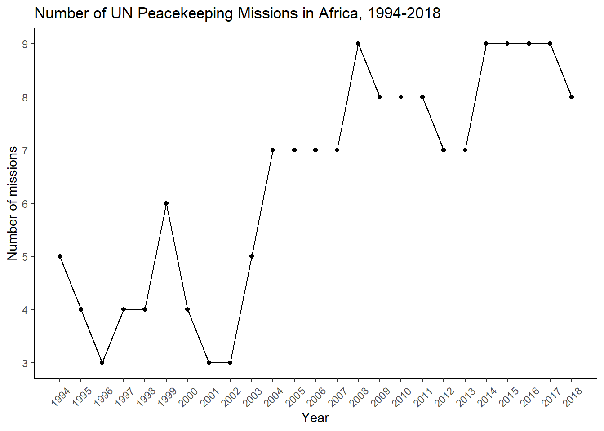
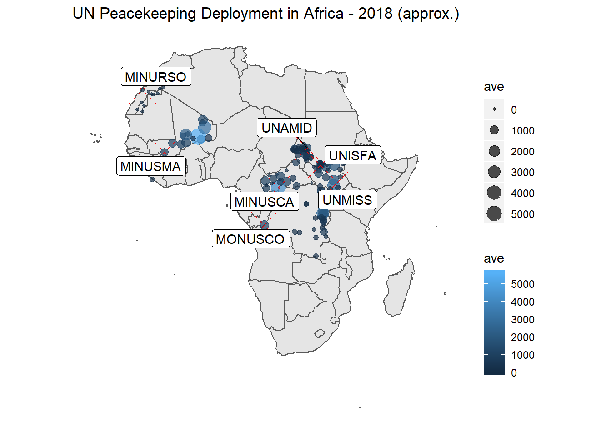

Last updated: 2020-07-03
Checks: 7 0
Knit directory: GeoPKO/
This reproducible R Markdown analysis was created with workflowr (version 1.6.2). The Checks tab describes the reproducibility checks that were applied when the results were created. The Past versions tab lists the development history.
Great! Since the R Markdown file has been committed to the Git repository, you know the exact version of the code that produced these results.
Great job! The global environment was empty. Objects defined in the global environment can affect the analysis in your R Markdown file in unknown ways. For reproduciblity it’s best to always run the code in an empty environment.
The command set.seed(20200629) was run prior to running the code in the R Markdown file. Setting a seed ensures that any results that rely on randomness, e.g. subsampling or permutations, are reproducible.
Great job! Recording the operating system, R version, and package versions is critical for reproducibility.
Nice! There were no cached chunks for this analysis, so you can be confident that you successfully produced the results during this run.
Great job! Using relative paths to the files within your workflowr project makes it easier to run your code on other machines.
Great! You are using Git for version control. Tracking code development and connecting the code version to the results is critical for reproducibility.
The results in this page were generated with repository version 9c0642e. See the Past versions tab to see a history of the changes made to the R Markdown and HTML files.
Note that you need to be careful to ensure that all relevant files for the analysis have been committed to Git prior to generating the results (you can use wflow_publish or wflow_git_commit). workflowr only checks the R Markdown file, but you know if there are other scripts or data files that it depends on. Below is the status of the Git repository when the results were generated:
Ignored files:
Ignored: .Rhistory
Ignored: .Rproj.user/
Ignored: analysis/.RData
Ignored: analysis/.Rhistory
Untracked files:
Untracked: 2020_07_03.R
Note that any generated files, e.g. HTML, png, CSS, etc., are not included in this status report because it is ok for generated content to have uncommitted changes.
These are the previous versions of the repository in which changes were made to the R Markdown (analysis/index.Rmd) and HTML (docs/index.html) files. If you’ve configured a remote Git repository (see ?wflow_git_remote), click on the hyperlinks in the table below to view the files as they were in that past version.
| File | Version | Author | Date | Message |
|---|---|---|---|---|
| Rmd | 9c0642e | Nguyen Ha | 2020-07-03 | wflow_publish(“analysis/index.Rmd”) |
| Rmd | 0d5cc47 | Nguyen Ha | 2020-07-03 | Fixed conflict with main fol. |
| Rmd | 4cf53c8 | Nguyen Ha | 2020-07-03 | Fixing legend position; previous tables |
| Rmd | 14ab237 | GitHub | 2020-07-03 | Update index.Rmd |
| Rmd | 557ebbf | Lou van Roozendaal | 2020-07-03 | Lou_change_graph |
| html | 3bde5f5 | Nguyen Ha | 2020-07-02 | Build site. |
| Rmd | 8b39fe5 | Nguyen Ha | 2020-07-02 | wflow_publish(c(“index.Rmd”, “about.Rmd”)) |
| html | 8b39fe5 | Nguyen Ha | 2020-07-02 | wflow_publish(c(“index.Rmd”, “about.Rmd”)) |
| html | 01d2b98 | hatnguyen267 | 2020-06-29 | Build site. |
| Rmd | 0a3c9c9 | hatnguyen267 | 2020-06-29 | more to index.rmb |
| html | 50d7b31 | hatnguyen267 | 2020-06-29 | Build site. |
| Rmd | 4db5b4f | hatnguyen267 | 2020-06-29 | adding items to index.rmb |
| html | 4d2d90f | hatnguyen267 | 2020-06-29 | Build site. |
| Rmd | a7817f7 | hatnguyen267 | 2020-06-29 | wflow_publish(all = TRUE) |
| Rmd | 8e7fc45 | hatnguyen267 | 2020-06-29 | Start workflowr project. |
This document contains a series of steps that the project members have performed to explore the Geo-PKO dataset. More information on the dataset can be found on its homepage.
Load packages.
library(tidyverse)
library(readr)
library(ggthemes)
library(knitr)
library(kableExtra)Import the dataset.
GeoPKO <- read_csv("data/geopko.csv")Now we can start with the actual fun stuff! Let’s have a quick look at the first few rows of the dataset.
kable(GeoPKO[1:5,]) %>% kable_styling() %>%
scroll_box(width = "100%", height = "200px")| Source | Mission | year | month | location | country | latitude | longitude | No.troops | RPF | RPF_No | RES | RES_No | FP | FP_No | No.TCC | name.of.TCC1 | No.troops.per.TCC1 | name.of.TCC2 | No.troops.per.TCC2 | name.of.TCC3 | No.troops.per.TCC3 | name.of.TCC4 | No.troops.per.TCC4 | name.of.TCC5 | No.troops.per.TCC5 | name.of.TCC6 | No.troops.per.TCC6 | name.of.TCC7 | No.troops.per.TCC7 | name.of.TCC8 | No.troops.per.TCC8 | name.of.TCC9 | No.troops.per.TCC9 | name.of.TCC10 | No.troops.per.TCC10 | name.of.TCC11 | No.troops.per.TCC11 | name.of.TCC12 | No.troops.per.TCC12 | name.of.TCC13 | No.troops.per.TCC13 | name.of.TCC14 | No.troops.per.TCC14 | UNPOL..dummy. | UNMO..dummy. | HQ | LO | comments | cow_code | gwno | name | TCC1 | TCC2 | TCC3 | TCC4 | TCC5 | TCC6 | TCC7 | TCC8 | TCC9 | TCC10 | TCC11 | TCC12 | TCC13 | TCC14 | ADM1_id | ADM1_name | ADM2_id | ADM2_name | PRIOID |
|---|---|---|---|---|---|---|---|---|---|---|---|---|---|---|---|---|---|---|---|---|---|---|---|---|---|---|---|---|---|---|---|---|---|---|---|---|---|---|---|---|---|---|---|---|---|---|---|---|---|---|---|---|---|---|---|---|---|---|---|---|---|---|---|---|---|---|---|---|---|---|
| Map no. 4309 | BINUB | 2007 | 3 | Bujumbura | Burundi | -3.382200 | 29.364400 | 0 | NA | NA | 0 | 0 | 0 | 0 | 0 | NA | NA | NA | NA | NA | NA | NA | NA | NA | NA | NA | NA | NA | NA | NA | NA | NA | NA | NA | NA | NA | NA | NA | NA | NA | NA | NA | NA | 0 | 0 | 3 | 0 | NA | 516 | 516 | Burundi | NA | NA | NA | NA | NA | NA | NA | NA | NA | NA | NA | NA | NA | NA | 3348 | Bujumbura Mairie | 20147 | Roherero | 124979 |
| Map no. 4309 Rev. 1 | BINUB | 2009 | 8 | Bujumbura | Burundi | -3.382200 | 29.364400 | 0 | NA | NA | 0 | 0 | 0 | 0 | 0 | NA | NA | NA | NA | NA | NA | NA | NA | NA | NA | NA | NA | NA | NA | NA | NA | NA | NA | NA | NA | NA | NA | NA | NA | NA | NA | NA | NA | 0 | 0 | 3 | 0 | NA | 516 | 516 | Burundi | NA | NA | NA | NA | NA | NA | NA | NA | NA | NA | NA | NA | NA | NA | 3348 | Bujumbura Mairie | 20147 | Roherero | 124979 |
| Map no. 4203 Rev. 2 | MINUCI | 2003 | 8 | Abidjan | Ivory Coast | 5.309657 | -4.012656 | 0 | NA | NA | 0 | 0 | 0 | 0 | 0 | NA | NA | NA | NA | NA | NA | NA | NA | NA | NA | NA | NA | NA | NA | NA | NA | NA | NA | NA | NA | NA | NA | NA | NA | NA | NA | NA | NA | 0 | 0 | 3 | 0 | MINUCI HQ; Also ECOWAS main HQ; France HQ | 437 | 437 | Cote D’Ivoire | NA | NA | NA | NA | NA | NA | NA | NA | NA | NA | NA | NA | NA | NA | 3411 | Lagunes | 40389 | Abidjan | 137152 |
| Map no. 4203 Rev. 3 | MINUCI | 2003 | 11 | Abidjan | Ivory Coast | 5.309657 | -4.012656 | 0 | NA | NA | 0 | 0 | 0 | 0 | 0 | NA | NA | NA | NA | NA | NA | NA | NA | NA | NA | NA | NA | NA | NA | NA | NA | NA | NA | NA | NA | NA | NA | NA | NA | NA | NA | NA | NA | 0 | 0 | 3 | 0 | MINUCI HQ; Also ECOWAS main HQ; France HQ; Fanci HQ | 437 | 437 | Cote D’Ivoire | NA | NA | NA | NA | NA | NA | NA | NA | NA | NA | NA | NA | NA | NA | 3411 | Lagunes | 40389 | Abidjan | 137152 |
| Map no. 4203 Rev. 4 | MINUCI | 2004 | 1 | Abidjan | Ivory Coast | 5.309657 | -4.012656 | 0 | NA | NA | 0 | 0 | 0 | 0 | 0 | NA | NA | NA | NA | NA | NA | NA | NA | NA | NA | NA | NA | NA | NA | NA | NA | NA | NA | NA | NA | NA | NA | NA | NA | NA | NA | NA | NA | 0 | 0 | 3 | 0 | MINUCI HQ; ECOWAS main HQ; France HQ; Fanci HQ | 437 | 437 | Cote D’Ivoire | NA | NA | NA | NA | NA | NA | NA | NA | NA | NA | NA | NA | NA | NA | 3411 | Lagunes | 40389 | Abidjan | 137152 |
The dataset covers UN peacekeeping missions in Africa between 1994 and 2018. We can use the dataset to extract the number of active missions during this period.
NoMission <- GeoPKO %>% select(year, Mission) %>% distinct(year, Mission) %>% count(year)
Plot1 <- ggplot(NoMission, aes(x=(as.numeric(year)), y=n)) + geom_point() + geom_line(size=0.5) +
scale_x_continuous("Year", breaks=seq(1994, 2018, 1))+theme_classic()+
scale_y_continuous("Number of missions", breaks=seq(0,10,1)) +
theme(panel.grid=element_blank(),
axis.text.x=element_text(angle=45, vjust=0.5))
Plot1
We want to have a quick snapshot of the deployment size in 2018, as well as the missions that were active in that year. We start by subsetting the main dataset to include entries for the year of 2018 and our variables of interests. GeoPKO reports deployment sizes according to the available maps published by the UN. Therefore, to obtain the numbers of troop deployment at the yearly level, we calculate the average number of troops per location over the months recorded.
GeoPKO$No.troops <- as.numeric(GeoPKO$No.troops)Warning: NAs introduced by coercionmap2018df <- GeoPKO %>% filter(year==2018) %>%
select(Mission, month, location, latitude, longitude, No.troops, HQ)
map2018df1 <- map2018df %>% group_by(location, latitude, longitude, Mission, HQ) %>%
summarize(ave = mean(No.troops, na.rm=TRUE)) %>% ungroup()
kable(map2018df1[1:5,], caption = "A preview of this dataframe")| location | latitude | longitude | Mission | HQ | ave |
|---|---|---|---|---|---|
| Abyei Camp | 9.627095 | 28.43450 | UNISFA | 3 | 1170.00 |
| Adikivu | -2.325729 | 28.81233 | MONUSCO | 0 | 568.75 |
| Adikivu | -2.325729 | 28.81233 | MONUSCO | 2 | 1250.00 |
| Agany Toak | 9.527483 | 28.43431 | UNISFA | 0 | 35.00 |
| Agok | 9.357486 | 28.58258 | UNISFA | 0 | 91.00 |
Next, we obtain the geometric shapes from rnaturalearth, and filter for countries in Africa.
library(rnaturalearth)
library(rnaturalearthdata)
library(sf)
world <- ne_countries(scale = "medium", returnclass = "sf")
Africa <- world %>% filter(region_un == "Africa")Finally, we plot our data onto the map.
library(ggrepel)
library(viridis)
p2 <- ggplot(data=Africa) + geom_sf() +
geom_point(data = map2018df1, aes(x=longitude, y=latitude, size= ave, color= ave), alpha=.7)+
scale_size_continuous(name="Average Troop Deployment", trans="log", range=c(1,12), breaks=c(0, 100, 300, 500, 1000, 2000, 3000, 4000,5000)) +
scale_alpha_continuous(name="Average Troop Deployment", trans="log", range=c(0.1, .9), breaks=c(0, 100, 300, 500, 1000, 2000, 3000, 4000,5000))+
scale_color_viridis(option="cividis", trans="log", breaks=c(0, 100, 300, 500, 1000, 2000, 3000, 4000,5000), name="Average Troop Deployment" ) +
guides( colour = guide_legend()) +
geom_point(data = map2018df1 %>% filter(HQ==3), aes (x=longitude, y=latitude), color = "red", shape = 4, size=7)+
geom_label_repel(data = map2018df1 %>% filter(HQ==3), aes(x=longitude, y=latitude, label=Mission)) +
labs (title ="UN Peacekeeping Deployment in Africa - 2018 (approx.)") +
labs(color='Average Troop Deployment') +
theme(
text = element_text(color = "#22211d"),
plot.background = element_rect(fill = "#f5f5f2", color = NA),
panel.background = element_rect(fill = "#f5f5f2", color = NA),
legend.background = element_rect(fill = "#f5f5f2", color = NA),
plot.title = element_text(size= 14, hjust=0.01, color = "#4e4d47", margin = margin(b = -0.1, t = 0.8, l = 4, unit = "cm")),
panel.grid=element_blank(),
axis.text=element_blank(),
axis.ticks=element_blank(),
axis.title=element_blank()
)
p2
sessionInfo()R version 3.5.0 (2018-04-23)
Platform: x86_64-w64-mingw32/x64 (64-bit)
Running under: Windows 10 x64 (build 16299)
Matrix products: default
locale:
[1] LC_COLLATE=English_United States.1252
[2] LC_CTYPE=English_United States.1252
[3] LC_MONETARY=English_United States.1252
[4] LC_NUMERIC=C
[5] LC_TIME=English_United States.1252
attached base packages:
[1] stats graphics grDevices utils datasets methods base
other attached packages:
[1] viridis_0.5.1 viridisLite_0.3.0 ggrepel_0.8.1
[4] sf_0.8-1 rnaturalearthdata_0.1.0 rnaturalearth_0.1.0
[7] kableExtra_1.1.0 knitr_1.28 ggthemes_4.2.0
[10] forcats_0.5.0 stringr_1.4.0 dplyr_0.8.4
[13] purrr_0.3.3 readr_1.3.1 tidyr_1.0.2
[16] tibble_2.1.3 ggplot2_3.2.1 tidyverse_1.3.0
[19] workflowr_1.6.2
loaded via a namespace (and not attached):
[1] httr_1.4.1 jsonlite_1.6.1 modelr_0.1.6 assertthat_0.2.1
[5] sp_1.4-1 highr_0.8 cellranger_1.1.0 yaml_2.2.1
[9] pillar_1.4.3 backports_1.1.5 lattice_0.20-35 glue_1.4.0
[13] digest_0.6.25 promises_1.1.0 rvest_0.3.5 colorspace_1.4-1
[17] htmltools_0.4.0 httpuv_1.5.2 pkgconfig_2.0.3 broom_0.5.5
[21] haven_2.2.0 scales_1.1.0 webshot_0.5.2 whisker_0.4
[25] later_1.0.0 git2r_0.26.1 generics_0.0.2 farver_2.0.3
[29] withr_2.1.2 lazyeval_0.2.2 cli_2.0.2 magrittr_1.5
[33] crayon_1.3.4 readxl_1.3.1 evaluate_0.14 fs_1.3.1
[37] fansi_0.4.1 nlme_3.1-137 xml2_1.2.2 class_7.3-14
[41] tools_3.5.0 hms_0.5.3 lifecycle_0.1.0 munsell_0.5.0
[45] reprex_0.3.0 compiler_3.5.0 e1071_1.7-3 rlang_0.4.5
[49] classInt_0.4-2 units_0.6-5 grid_3.5.0 rstudioapi_0.11
[53] rmarkdown_2.3 gtable_0.3.0 DBI_1.1.0 R6_2.4.1
[57] gridExtra_2.2.1 lubridate_1.7.4 rgeos_0.5-2 rprojroot_1.3-2
[61] KernSmooth_2.23-15 stringi_1.4.6 Rcpp_1.0.4.6 vctrs_0.2.3
[65] dbplyr_1.4.2 tidyselect_1.0.0 xfun_0.12